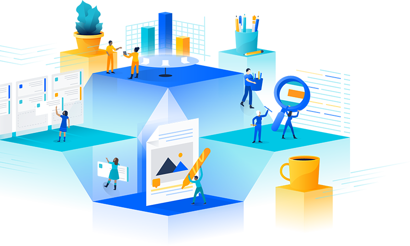

About
Atlassian in Seoul 2018
- 'Atlassian in Seoul 2018
- 
- Atlassian in Seoul 2018에 참석해주신 모든 분께 감사드립니다.
- 멀티 트랙 형식으로 진행되었던 이날의 행사에 500여분이 참석해 주셨습니다. 특히 Team Tools 트랙에는 자리가 부족하여 불편하셨을 것으로 생각합니다. 내년에는 자리를 좀 더 넉넉히 준비하겠습니다.
다른 일정이 있어 참석하지 못했던 분들과 다시 보기를 원하시는 분들을 위해 발표자료와 영상을 준비했습니다. 동시통역으로 진행된 2개의 키노트 세션은 한국어 자막 처리를 하였습니다. 여러분께서 남겨주신 피드백을 바탕으로 Atlassian in Seoul 2019에는 더욱 유익한 행사가 될 수 있도록 준비하겠습니다.
감사합니다.
Atlassian 한국대표 류윤상 Jason Ryu
-
Team Practice
주로 IT 또는 Non-IT 기획자, 또는 조직의 일하는 문화 변화에 관심이 있는 분들을 위해
-
Team Tools(Basic)
Atlassian 제품에 대한 기초적인 내용으로, Atlassian제품에 경험이 없는 분들을 위해
-
Team Tools(Advanced)
Atlassian 제품을 현재 사용 중이나, 더 효과적으로 사용하기를 원하는 분들을 위해
Keynote Speakers
-

Scott DavisSolutions Engineer, APAC
Atlassian -
Bernard FergusonR&D Team Coach
Atlassian
AIS 2018 발표자료 및 다시보기
Atlassian in Seoul 2018
| Keynote |
|---|
| Breakout Session : Team Practice |
|---|
| Breakout Session : Team Tools - Basic |
|---|
Solution Partners
아틀라시안 한국 공식 파트너사
홈페이지 및 연락처